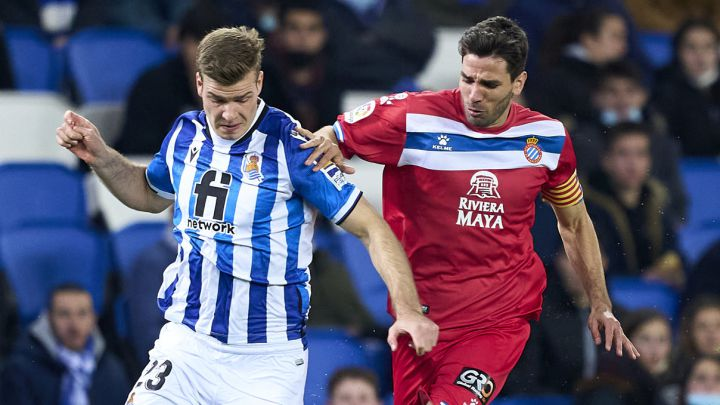
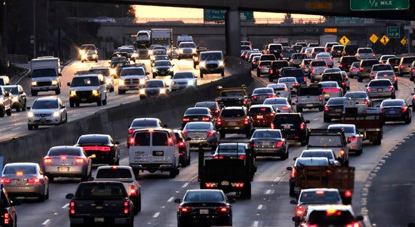

linea
"Es Un Acuerdo Con Corruptos"
candidatos critican perdon social que plantea petro
Como pocas veces en la contienda, los aspirantes a la Presidencia de la republica coincidieron en rechazar la propuesta el candidato del Pacto Historico, dormulada justo despues de una reunion de su hermano, Juan fernando Petro, con el condenado Ivan moreno.

linea
El Manchester United
interesado en NKUNKU
El jugador del Lepzig, Chistopher Nkunku, esta siendo una de las revelaciones de la temporada en la Bundesliga tras anotar 28 goles en 42 partidos. Estas cifras han hecho que grandes clubes europeos se hayan interesado en él.

linea
¿Sale Hoy De Bogota?
asi estan las principales vias de la capital
Miles de bogotanos empiezan a viajar por Semana Santa desde este miercoles. Conozca el estado de las principales salidas de la capital.
